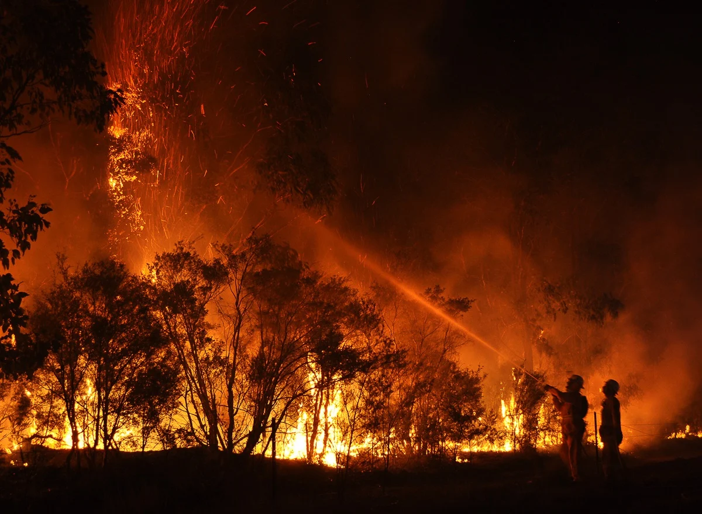

01
Shasta County(CA) Wildfire Analysis
The Shasta County wildfire project, analysed the spatial distribution and impacts of major fires across Shasta County using GIS-based risk modelling and impact assessment. Wildfire perimeters, incident points, data were overlaid with population density, infrastructure, land cover, and critical facilities to evaluate exposure and vulnerability.
Explore Project